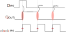

Lógica Sequencial¶
Colossus
O Colossus foi um computador Britânico de 1700 válvulas, feito em 1943 para decifrar códigos nazistas durante a segunda guerra mundial. O computador e planos foram destruídos para manter o projeto em segredo.
Uma característa importante desse computador é que ele podia ser programado e reprogramado para decifrar as mensagens nazistas. Essa flexibilidade de programação foi revolucionária. O computador usava um mecanismo de memória chamado de flip-flops, que foi desenvolvido muitos anos antes pelos professores
Até o momento só usamos circuitos criados com lógica combinacional. Porém nem todos os tipos de lógica digital podem ser enquadrados nessa categoria. Nessas lógicas uma tabela verdade define bem a saída de um circuito. Por exemplo, podemos dizer que ao se colocar os sinais nas entradas de uma unidade lógica aritmética temos quase que instantaneamente uma saída válida e independente dos sinais que estavam anteriormente no circuito.

Já na lógica sequencial o estado anterior das entradas influencia na saída, ou seja, essa lógica possui uma memória. E é justamente essa característica de memória de estados anteriores que nos interessa. Podemos por exemplo armazenar valores para uso futuro, ou tomar uma decisão com base no estado anterior/atual.

http://www.inf.pucrs.br/~emoreno/undergraduate/SI/orgarq/class_files/Aula06.pdf http://www.ee.surrey.ac.uk/Projects/CAL/seq-switching/General_seq_circ.htm
Sistemas sequências são em sua grande combinados com sistema síncrono, onde todos o circuito digital opera em um
determinado ritmo, esse sinal é conhecido como clock do sistema.
Circuitos biestáveis¶
Um dos circuitos sequenciais mais simples existentes são os circuitos biestáveis, que são chamados assim pois permanecem em um dos dois estados binários (0 ou 1) enquanto estiver energizado. Eles são usados para armazenar e recuperar os estados dos bits dos computadores.
O latch SR é um circuito biestável composto de duas portas NOR que armazenam um valor simples.

Fonte: WikiBook
Nesse circuito normalmente as entradas S e R, conhecidas como Set e Reset, ficam em nível baixo. Enquanto estiverem assim o valor das saídas Q e \bar{Q}, que é sempre o inverso do Q, se mantem inalterados. Se o nível do S subir (1) a saída Q fica em nível alto, ou podemos dizer 1, já se o nível do R, Q fica em nível lógico baixo, ou seja 0. A tabela a seguir ilustra o texto:
| S | R | Q | \bar{Q} |
|---|---|---|---|
0 |
0 |
Armazenado | !Armazenado |
1 |
0 |
1 |
0 |
0 |
1 |
0 |
1 |
1 |
1 |
metaestável | metaestável |
Um outro circuito biestável é o latch tipo D, nesse caso o circuito mantem o valor da entrada de Dados D enquanto a entrada de Enable E estiver em nível alto, se o sinal E for para nível baixo o circuito não muda de estado.
Esse componente possui a tabela verdade a seguir:
| E | D | Q | \bar{Q} |
|---|---|---|---|
0 |
0 |
Armazenado | !Armazenado |
0 |
1 |
Armazenado | !Armazenado |
1 |
0 |
Copia Entrada D: 0 |
Copia Entrada D negada: 1 |
0 |
1 |
Copia Entrada D: 1 |
Copia Entrada D negada: 0 |
Clock¶
Em sistemas digitais, precisamos considerar que cada porta lógica possui um tempo de propagação do resultado, a resposta de uma porta AND não é imediata, leva alguns ns para que o resultado da operação a and b estabilize na saída. Cada porta possui tempos de propagação distintos (até uma mesma porta AND possui diferença de tempo entre elas). Agora imagine um sistema com centenas de milhares de portas lógicas onde um sinal pode percorrer por diversos caminhos distintos, mas precisa chegar na saída ao mesmo tempo. Muito difícil ne? Para isso utilizamos um sistema síncrono, que pretende resolver esse problema.
Podemos fazer analogia com uma banda que possui um saxofonista muito virtuoso chamado de Nand-Parker e um guitarrista mais calmo chamado de Or-Brubeck, o que aconteceria se cada um tocasse em seu tempo? O resultado com certeza não serial bom! Para isso tem o ritmo/ batida, na qual os músicos por mais 'velozes/lentos' que sejam, precisam seguir. Em um sistema digital, esse é um dos papeis do clock! fazer com que todos executem ao mesmo tempo.
O clock é um sinal elétrico periódico utilizado para sincronizar sistemas digitais, utilizado em todo circuito síncrono, serve como o 'baterista' da banda, dando o ritmo de execução para a eletrônica. A cada novo clock (instante que ocorre uma mudança no sinal 1 -> 0 ou de 0 -> 1), o sistema começa uma nova operação. O sinal do clock é geralmente periódico e de modulação 50% (50% em alto e 50% em baixo):

Clock de 3Ghz
São 3 bilhões 3_000_000_000 de bordas (0 -> 1) em um segundo!! Imagine que a cada borda, uma operação é realizada no computador, são 3 bilhões de operações em um único segundo....
Overclock?
Muitos de vocês já ouviram falar overclock? Nessa técnica, aumentasse o clock para uma frequência na qual o sistema não foi projetado para operar, consequências disso são:
- Possíveis erros de processamento (dado que parte do circuito pode ser mais lento que o 1/f)
- Superaquecimento do chip, já que a tecnologia atual utilizada para fabricação de componentes eletrônicos (MOSFET) 'gasta' energia a cada clock. Com um aumento no clock, mais energia é gasta por segundo.
Borda
Nem todo sistema digital trabalha com borda de subida (rising_edge) (0 -> 1), outras opções são:
- borda de descida (
falling_edge):1->0. - double data rate (DDR): Uma nova mudança a cada borda, subida e descida. (Dai que vem o nome da memória DDR4 do seu computador!)
- http://slideplayer.com.br/slide/370185/
- http://www.plantation-productions.com/Webster/www.artofasm.com/Linux/HTML/SystemOrganizationa4.html
- http://www.gitam.edu/eresource/comp/gvr/6.1.htm
Flip-Flop¶
Flip-Flop (FF) é um circuito similar ao LATCH porém síncrono, ou seja, a mudança na saída (Q) só ocorre na borda do clock.
Tip
FF são usados por diversas razões, nesse curso vamos explorar o uso do FF para a criação de uma unidade de armazenamento de bits.
Note
Sabe o CI 555? Aquele usado em acionamentos para gerar o PWM? Internamente ele possui um FF do tipo D:

Fonte: https://www.electronics-tutorials.ws/waveforms/555_timer.html
Existem diversos tipos de FF, mas vamos olhar apenas para o FF do tipo D.
FF tipo D¶
O FF tipo D possui as seguintes portas:
- D entrada do de
Dado - Q saída do dado copiado
- \bar{Q} saída do dado copiado
- CLK entrada do clock

Toda vez que o clock é mudado, o sinal que está na entrada D é copiado para a saída Q, conforme diagrama a seguir:

A tabela verdade desse componente é:
| D (in) | clk (in) | Q (out) |
|---|---|---|
0 |
0 |
Q* |
1 |
1 |
Q* |
0 |
^ |
0 |
1 |
^ |
1 |
^: borda de subidaQ*: Q armazenado anteriormente
Clear e Preset¶
FF do tipo D podem possuir mais dois sinais de controle: clear e preset. O sinal clear faz com que a saída Q vá para 0 independe da entada D e do clock. O sinal preset faz com que a saída Q vá para 1 independente da entrada D e do clock.
A tabela verdade com esses sinais a mais fica:
| D (in) | clr | set | clk (in) | Q (out) |
|---|---|---|---|---|
x |
0 |
0 |
x |
Q* |
x |
1 |
0 |
x |
0 |
x |
0 |
1 |
x |
1 |
0 |
0 |
0 |
^ |
0 |
1 |
0 |
0 |
^ |
1 |